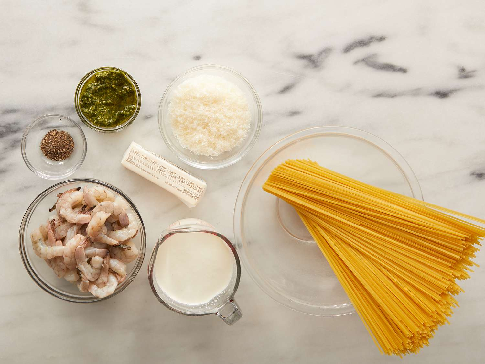
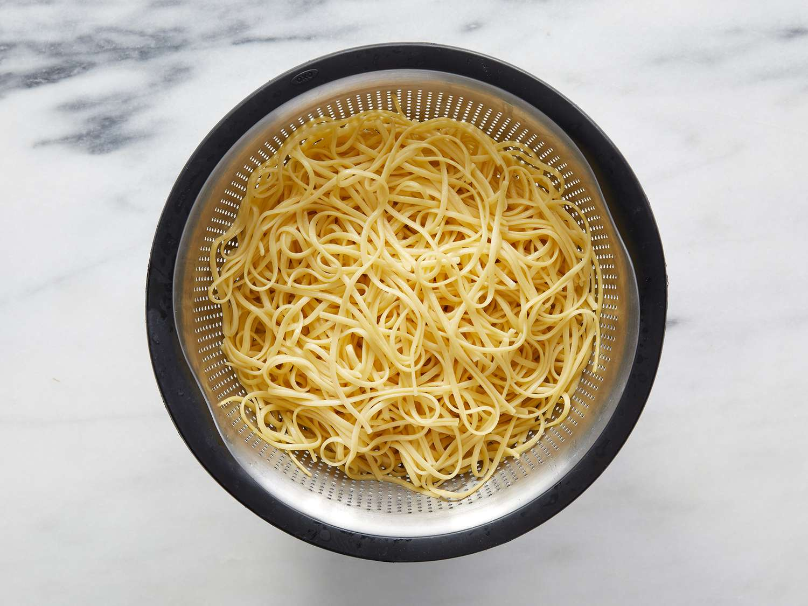
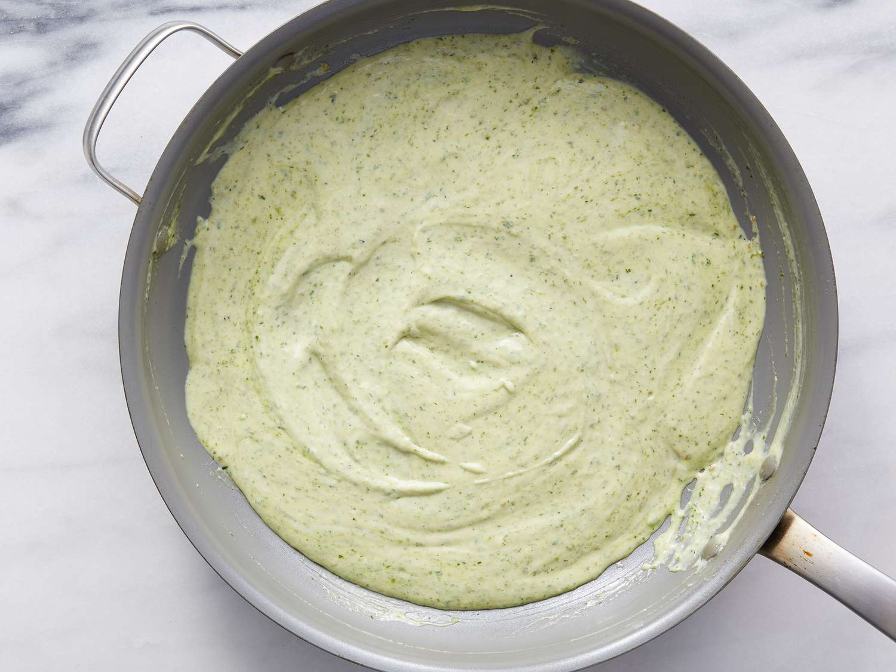
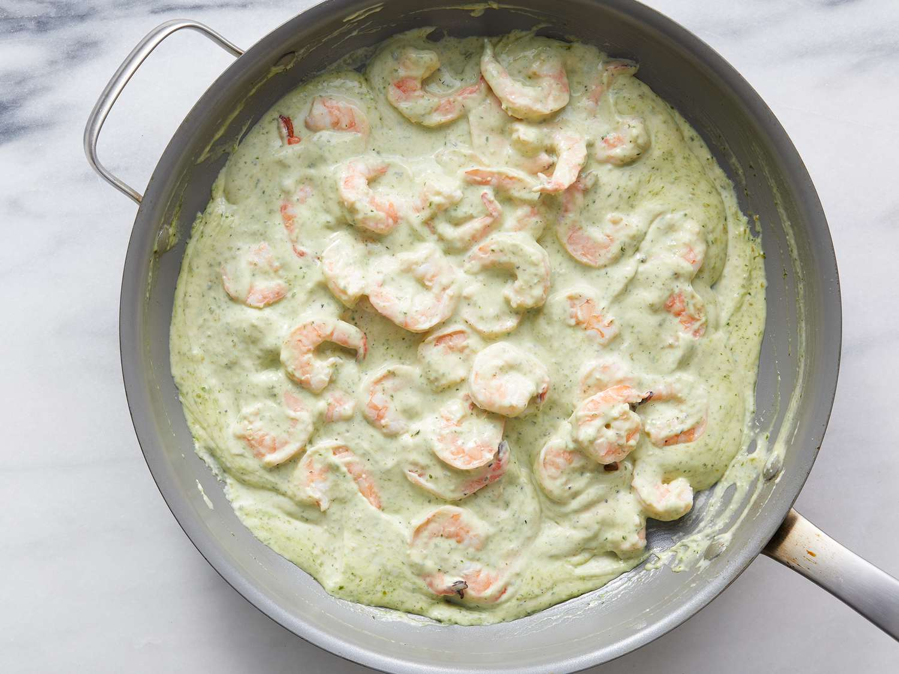
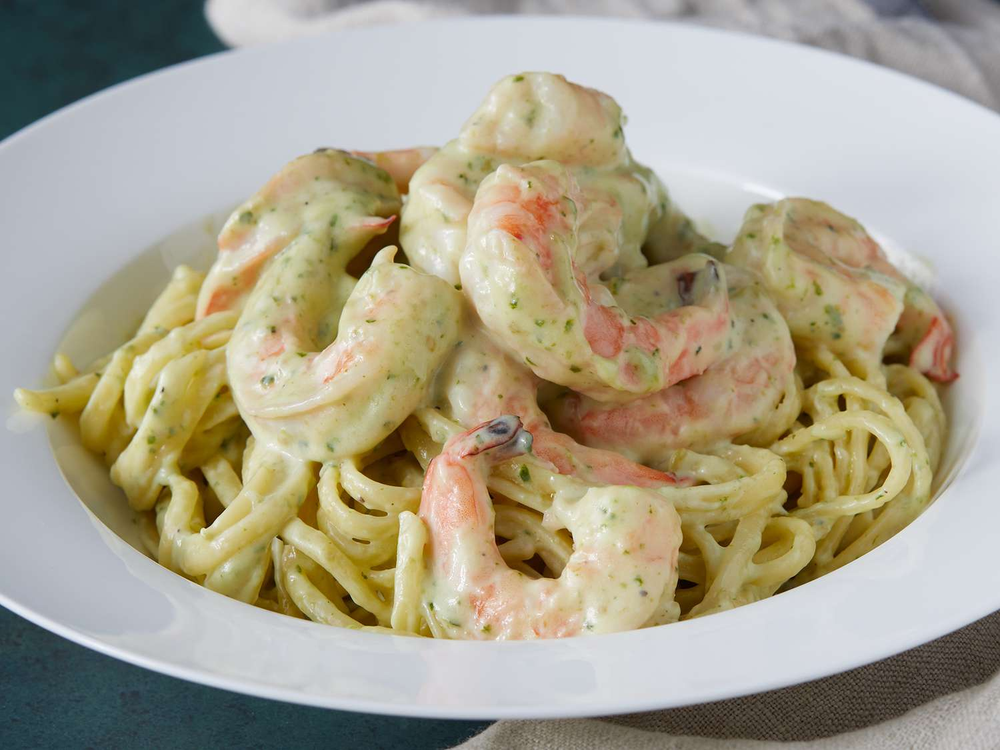

Creamy Pesto Shrimp

A creamy and flavorful shrimp pasta made with pesto sauce. Perfect for quick dinners and special occasions.
15 mins
15 mins
30 mins
8
Ingredients
- 1 pound linguine pasta
- ½ cup butter
- 2 cups heavy cream
- ½ teaspoon ground black pepper
- 1 cup grated Parmesan cheese
- ⅓ cup pesto
- 1 cup grated Parmesan cheese
- 1 pound large shrimp, peeled and deveined
Directions
Step 1
Gather ingredients together.

Step 2
Fill a large pot with lightly salted water and bring to a rolling boil. Stir in linguine and return to a boil. Cook pasta uncovered, stirring occasionally, until tender yet firm to the bite, about 8 to 10 minutes; drain.

Step 3
Meanwhile, melt butter in a large skillet over medium heat. Stir in cream and season with pepper; cook, stirring constantly, for 6 to 8 minutes.
Step 4
Stir Parmesan cheese into cream sauce until thoroughly mixed. Stir in pesto and cook until thickened, 3 to 5 minutes.

Step 5
Stir in shrimp and cook until they turn pink, about 5 minutes. Serve sauce over hot linguine.

Step 6
Serve hot and enjoy!

Nutrition Facts (per serving)
646
Calories
43g
Fat
43g
Carbs
23g
Protein